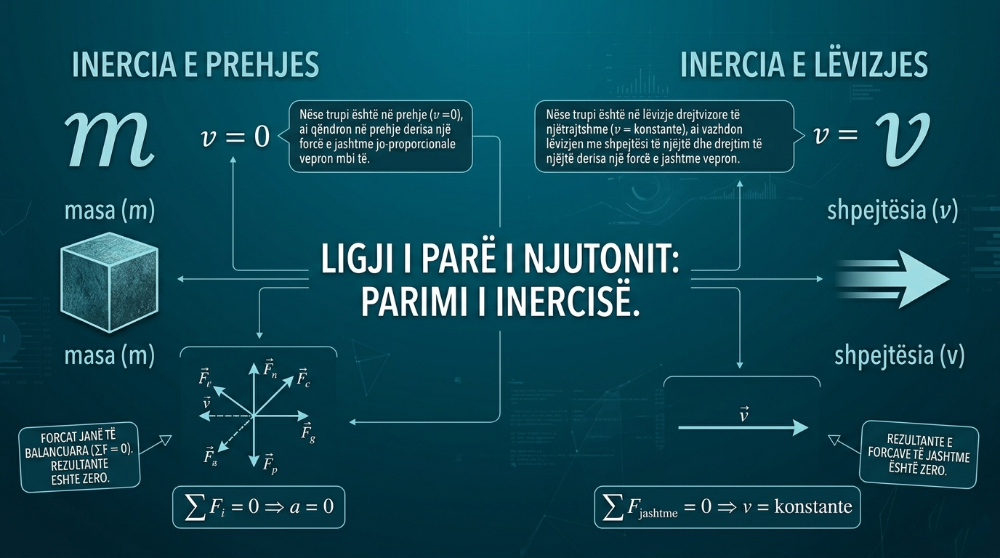
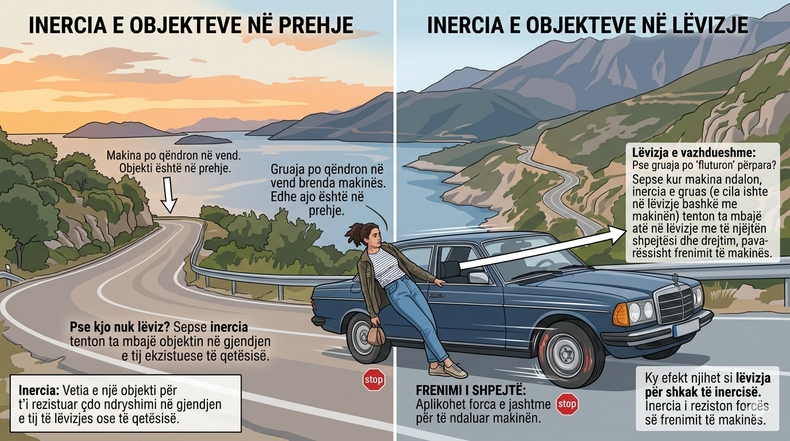

Projekt fizikë
Ligji i parë i Njutonit, i njohur edhe si ligji i inercisë, shpjegon se një trup qëndron në gjendje qetësie ose lëvizje të njëtrajtshme nëse mbi të nuk vepron asnjë forcë e jashtme.


Inercia është vetia e një trupi për të ruajtur gjendjen e tij të qetësisë ose të lëvizjes së njëtrajtshme.
Sa më e madhe të jetë masa e trupit, aq më e madhe është inercia e tij.
Të kuptojmë konceptin e inercisë dhe ligjin e parë të Njutonit.
Të mësojmë rëndësinë e ligjit në jetën e përditshme dhe në shkencë.
Të lidhim teorinë me eksperimente të thjeshta që mund të realizohen në klasë.
Të përkufizojmë saktë Ligjin e Parë të Njutonit dhe të shpjegojmë konceptin e inercisë.
Të kuptojmë se si forcat e balancuara (kur shuma e tyre është zero) ndikojnë në gjendjen e një trupi
Të dallojmë ndryshimin midis një trupi në prehje dhe një trupi që lëviz me shpejtësi konstante.
Wikipedia
Fizika 8
Enciklopedi